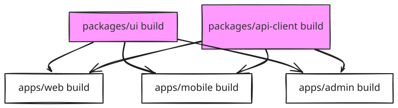

Monorepo — Interview Reference
What is a Monorepo?
A monorepo is a single repository containing multiple related packages or applications, all versioned together.
One-liner: One repo, many packages — shared tooling, atomic changes, coordinated versioning.
monorepo/
apps/
web/ ← Next.js app
mobile/ ← React Native app
admin/ ← Admin dashboard
packages/
ui/ ← Shared component library
utils/ ← Shared utilities
config/ ← Shared ESLint, TypeScript, Tailwind configs
api-client/ ← Shared API types and fetch wrappers
Monorepo vs Polyrepo
| Monorepo | Polyrepo | |
|---|---|---|
| Atomic changes | One PR touches ui + web + mobile |
3 PRs, 3 reviews, 3 deployments, versioning drift |
| Shared code | Import directly, no publish needed | Must publish to npm between changes |
| Tooling | Configure once (ESLint, TS, test) | Configure per-repo, often drift |
| CI time | Slower (bigger repo) but offset by caching | Faster per-repo, but no cross-repo test |
| Onboarding | One clone, one install |
Clone N repos, manage N configs |
| Team autonomy | Shared ownership model | Teams fully own their repo |
| Scale | Gets complex with 100+ packages | Gets complex with cross-repo coordination |
When to choose monorepo: Multiple apps share significant code, one team owns the stack, atomic cross-package changes are frequent.
When to choose polyrepo: Teams are fully independent, APIs are stable contracts, different release cycles, different language stacks.
Core Tooling
Workspace Protocol (npm / yarn / pnpm)
All major package managers support workspaces — they hoist shared dependencies to the root and symlink local packages.
// root package.json
{
"name": "my-monorepo",
"workspaces": ["apps/*", "packages/*"]
}
# Install all dependencies across all workspaces
npm install
# Run a script in a specific workspace
npm run build --workspace=apps/web
# Add a dependency to a specific package
npm add react --workspace=apps/web
pnpm workspaces are preferred in large monorepos — pnpm uses a content-addressable store (hard links) so packages are never duplicated on disk, even across multiple projects.
Turborepo
Turborepo is a build system with remote caching for JavaScript monorepos. It understands your task dependency graph and runs tasks in the optimal order with aggressive caching.
// turbo.json
{
"pipeline": {
"build": {
"dependsOn": ["^build"], // ^ = run build in dependencies first
"outputs": [".next/**", "dist/**"]
},
"lint": {
"outputs": []
},
"test": {
"dependsOn": ["^build"],
"outputs": ["coverage/**"]
},
"dev": {
"cache": false, // never cache dev server
"persistent": true
}
}
}
turbo run build # builds all packages in dependency order
turbo run build --filter=apps/web # build only web and its deps
turbo run lint test build # run multiple tasks
Task Dependency Graph

^build means: before building this package, build all its dependencies first. Turborepo runs ui and api-client builds in parallel, then web, mobile, and admin in parallel after.
Remote Caching — the killer feature
# First CI run: tasks execute + outputs cached to Turborepo cloud
turbo run build --token=$TURBO_TOKEN --team=my-org
# Second CI run (nothing changed in packages/ui):
# ui build → CACHE HIT → restored in <1s instead of rebuilding
How caching works: - Turborepo hashes: source files + environment variables + task config - If hash matches a previous run → restore outputs from cache (local or remote) - If hash differs → run task, store new outputs
Without remote cache: CI builds everything every time — 8 min per PR
With remote cache: CI skips unchanged packages — <1 min per PR for small changes
Nx
Nx is a more opinionated build system with generators, executors, and first-class framework support.
# Create an Nx workspace
npx create-nx-workspace@latest my-org --preset=react
# Generate a new app
nx generate @nx/next:app my-app
# Generate a shared library
nx generate @nx/react:library ui --directory=packages/ui
# Run affected tasks only (changed + downstream)
nx affected --target=test
nx affected --target=build
Affected — only run what changed
# Turborepo equivalent: --filter=[HEAD^1]
# Nx:
nx affected --target=build --base=main --head=HEAD
# How it works:
# 1. Git diff between base and HEAD → changed files
# 2. Map files to projects (via project graph)
# 3. Run target for changed projects + all projects that depend on them
Only ui, web, mobile run their tests. admin and api-client skip. On a PR touching only packages/ui, this saves 60% of CI time.
Turborepo vs Nx
| Turborepo | Nx | |
|---|---|---|
| Philosophy | Minimal, bring your own tools | Opinionated, batteries included |
| Generators | No | Yes — scaffold apps, libs, components |
| Executors | No — runs npm scripts | Yes — wraps build tools |
| Remote cache | Vercel (paid beyond free tier) | Nx Cloud (free tier generous) |
| Framework support | Framework agnostic | First-class Next.js, React, Angular, Node |
| Learning curve | Low | Higher |
| Best for | Teams that want speed without lock-in | Teams that want full scaffolding + governance |
Shared Packages — Patterns
Pattern 1 — Source sharing (TypeScript paths)
// tsconfig.base.json at root
{
"compilerOptions": {
"paths": {
"@my-org/ui": ["packages/ui/src/index.ts"],
"@my-org/utils": ["packages/utils/src/index.ts"]
}
}
}
Each app extends this config. Imports resolve directly to TypeScript source — no build step needed for local development.
Pattern 2 — Built packages
// packages/ui/package.json
{
"name": "@my-org/ui",
"main": "./dist/index.js",
"types": "./dist/index.d.ts",
"exports": {
".": { "import": "./dist/index.mjs", "require": "./dist/index.js" }
}
}
Each consuming app imports the built output. Requires running build on ui before consuming apps can build.
Which to choose: Source sharing = simpler dev loop, requires TypeScript. Built packages = matches what you'd publish to npm, works with any bundler.
Changesets — Versioning and Publishing
Changesets manages version bumps and changelogs for packages in a monorepo.
# Developer adds a changeset when making a PR
npx changeset
# → prompts: which packages changed? patch/minor/major? summary?
# → creates .changeset/purple-dogs-fly.md
# In CI on merge to main:
npx changeset version # bumps package.json versions + updates CHANGELOGs
npx changeset publish # publishes changed packages to npm
.changeset/
purple-dogs-fly.md:
---
"@my-org/ui": minor
---
Added dark mode support to Button component
Without changesets: Manually bumping versions across interdependent packages causes version drift, missed changelogs, and broken semver contracts.
Shared Config Packages
packages/
config/
eslint/
index.js ← shared ESLint config
typescript/
base.json ← shared tsconfig
tailwind/
index.js ← shared Tailwind preset
// packages/config/eslint/index.js
module.exports = {
extends: ['eslint:recommended', '@typescript-eslint/recommended'],
rules: { 'no-console': 'warn' }
};
// apps/web/.eslintrc.js
module.exports = {
extends: ['@my-org/config/eslint']
};
One update to the shared ESLint config propagates to all apps — no drift between projects.
CI/CD Strategy
# GitHub Actions — only run affected
- name: Run affected tests
run: npx nx affected --target=test --base=origin/main
- name: Run affected builds
run: npx nx affected --target=build --base=origin/main
# Turborepo equivalent
- name: Build
run: npx turbo run build --filter=[origin/main]
Deployment strategy: Each app in apps/ deploys independently. CI detects which apps were affected, builds only those, deploys only those.
Interview Summary
Key talking points
-
"The core monorepo value prop is atomic changes — one PR touches the shared component library and both apps that consume it. In polyrepo, that's three PRs, three reviews, three deployments, with versioning drift in between."
-
"Turborepo's task pipeline understands
^build— before building this package, build all its dependencies first. Combined with content hashing and remote caching, unchanged packages restore from cache in seconds. On a PR touching one shared package, CI runs only that package and its downstream consumers." -
"Nx's
affectedcommand is the same idea — diff from base branch, map to project graph, run targets only for changed + downstream. For large monorepos with 50+ packages, this is the difference between 20-minute CI and 3-minute CI." -
"Changesets solve the versioning problem. Without it, developers manually bump versions and forget changelogs. With it, developers add a changeset file per PR describing the change level (patch/minor/major). CI runs
changeset versionon merge, bumping all affected package.json versions and updating CHANGELOGs automatically, then publishes." -
"Shared config packages are the underrated part. One
packages/config/eslintconsumed by all apps — ESLint rules, TypeScript config, Tailwind presets. One PR to update rules propagates everywhere. Polyrepo teams copy-paste configs and they drift within months."